Chapter 16: Disease and Epidemiology¶
Introduction¶
In the United States and other developed nations, public health is a key function of government. A healthy citizenry is more productive, content, and prosperous; high rates of death and disease, on the other hand, can severely hamper economic productivity and foster social and political instability. The burden of disease makes it difficult for citizens to work consistently, maintain employment, and accumulate wealth to better their lives and support a growing economy.
In this chapter, we will explore the intersections between microbiology and epidemiology, the science that underlies public health. Epidemiology studies how disease originates and spreads throughout a population, with the goal of preventing outbreaks and containing them when they do occur. Over the past two centuries, discoveries in epidemiology have led to public health policies that have transformed life in developed nations, leading to the eradication (or near eradication) of many diseases that were once causes of great human suffering and premature death. However, the work of epidemiologists is far from finished. Numerous diseases continue to plague humanity, and new diseases are always emerging. Moreover, in the developing world, lack of infrastructure continues to pose many challenges to efforts to contain disease.
16.1 The Language of Epidemiologists¶
Learning Objectives
By the end of this section, you will be able to:
- Explain the difference between prevalence and incidence of disease
- Distinguish the characteristics of sporadic, endemic, epidemic, and pandemic diseases
- Explain the use of Koch’s postulates and their modifications to determine the etiology of disease
- Explain the relationship between epidemiology and public health
Clinical Focus: Part 1
In late November and early December, a hospital in western Florida started to see a spike in the number of cases of acute gastroenteritis-like symptoms. Patients began arriving at the emergency department complaining of excessive bouts of emesis (vomiting) and diarrhea (with no blood in the stool). They also complained of abdominal pain and cramping, and most were severely dehydrated. Alarmed by the number of cases, hospital staff made some calls and learned that other regional hospitals were also seeing 10 to 20 similar cases per day.
- What are some possible causes of this outbreak?
- In what ways could these cases be linked, and how could any suspected links be confirmed?
Jump to the next Clinical Focus box.
The field of epidemiology concerns the geographical distribution and timing of infectious disease occurrences and how they are transmitted and maintained in nature, with the goal of recognizing and controlling outbreaks. The science of epidemiology includes etiology (the study of the causes of disease) and investigation of disease transmission (mechanisms by which a disease is spread).
Analyzing Disease in a Population¶
Epidemiological analyses are always carried out with reference to a population, which is the group of individuals that are at risk for the disease or condition. The population can be defined geographically, but if only a portion of the individuals in that area are susceptible, additional criteria may be required. Susceptible individuals may be defined by particular behaviors, such as intravenous drug use, owning particular pets, or membership in an institution, such as a college. Being able to define the population is important because most measures of interest in epidemiology are made with reference to the size of the population.
The state of being diseased is called morbidity. Morbidity in a population can be expressed in a few different ways. Morbidity or total morbidity is expressed in numbers of individuals without reference to the size of the population. The morbidity rate can be expressed as the number of diseased individuals out of a standard number of individuals in the population, such as 100,000, or as a percent of the population.
There are two aspects of morbidity that are relevant to an epidemiologist: a disease’s prevalence and its incidence. Prevalence is the number, or proportion, of individuals with a particular illness in a given population at a point in time. For example, the Centers for Disease Control and Prevention (CDC) estimated that in 2012, there were about 1.2 million people 13 years and older with an active human immunodeficiency virus (HIV) infection. Expressed as a proportion, or rate, this is a prevalence of 467 infected persons per 100,000 in the population.1 On the other hand, incidence is the number or proportion of new cases in a period of time. For the same year and population, the CDC estimates that there were 43,165 newly diagnosed cases of HIV infection, which is an incidence of 13.7 new cases per 100,000 in the population.2 The relationship between incidence and prevalence can be seen in Figure 16.2. For a chronic disease like HIV infection, prevalence will generally be higher than incidence because it represents the cumulative number of new cases over many years minus the number of cases that are no longer active (e.g., because the patient died or was cured).
In addition to morbidity rates, the incidence and prevalence of mortality (death) may also be reported. A mortality rate can be expressed as the percentage of the population that has died from a disease or as the number of deaths per 100,000 persons (or other suitable standard number).
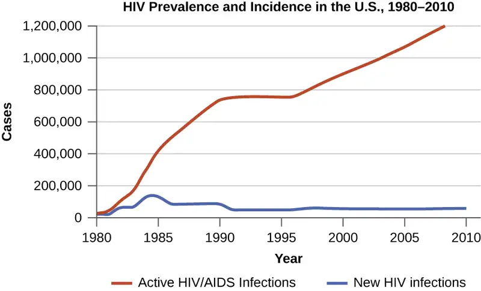
Check Your Understanding
- Explain the difference between incidence and prevalence.
- Describe how morbidity and mortality rates are expressed.
Patterns of Incidence¶
Diseases that are seen only occasionally, and usually without geographic concentration, are called sporadic diseases. Examples of sporadic diseases include tetanus, rabies, and plague. In the United States, Clostridium tetani, the bacterium that causes tetanus, is ubiquitous in the soil environment, but incidences of infection occur only rarely and in scattered locations because most individuals are vaccinated, clean wounds appropriately, or are only rarely in a situation that would cause infection.3 Likewise in the United States there are a few scattered cases of plague each year, usually contracted from rodents in rural areas in the western states.4
Diseases that are constantly present (often at a low level) in a population within a particular geographic region are called endemic diseases. For example, malaria is endemic to some regions of Brazil, but is not endemic to the United States.
Diseases for which a larger than expected number of cases occurs in a short time within a geographic region are called epidemic diseases. Influenza is a good example of a commonly epidemic disease. Incidence patterns of influenza tend to rise each winter in the northern hemisphere. These seasonal increases are expected, so it would not be accurate to say that influenza is epidemic every winter; however, some winters have an usually large number of seasonal influenza cases in particular regions, and such situations would qualify as epidemics (Figure 16.3 and Figure 16.4).
An epidemic disease signals the breakdown of an equilibrium in disease frequency, often resulting from some change in environmental conditions or in the population. In the case of influenza, the disruption can be due to antigenic shift or drift (see Virulence Factors of Bacterial and Viral Pathogens), which allows influenza virus strains to circumvent the acquired immunity of their human hosts.
An epidemic that occurs on a worldwide scale is called a pandemic disease. For example, HIV/AIDS is a pandemic disease and novel influenza virus strains often become pandemic.
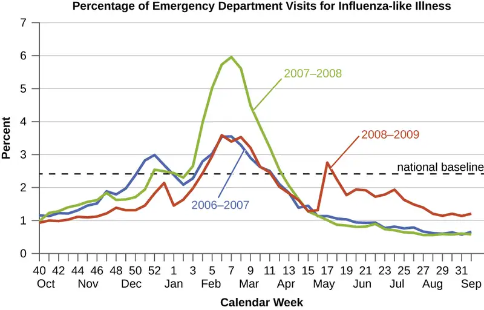
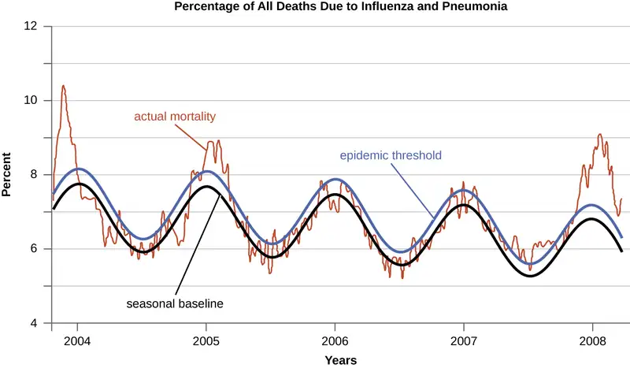
Check Your Understanding
- Explain the difference between sporadic and endemic disease.
- Explain the difference between endemic and epidemic disease.
Clinical Focus: Part 2
Hospital physicians suspected that some type of food poisoning was to blame for the sudden post-Thanksgiving outbreak of gastroenteritis in western Florida. Over a two-week period, 254 cases were observed, but by the end of the first week of December, the epidemic ceased just as quickly as it had started. Suspecting a link between the cases based on the localized nature of the outbreak, hospitals handed over their medical records to the regional public health office for study.
Laboratory testing of stool samples had indicated that the infections were caused by Salmonella bacteria. Patients ranged from children as young as three to seniors in their late eighties. Cases were nearly evenly split between males and females. Across the region, there had been three confirmed deaths in the outbreak, all due to severe dehydration. In each of the fatal cases, the patients had not sought medical care until their symptoms were severe; also, all of the deceased had preexisting medical conditions such as congestive heart failure, diabetes, or high blood pressure.
After reviewing the medical records, epidemiologists with the public health office decided to conduct interviews with a randomly selected sample of patients.
- What conclusions, if any, can be drawn from the medical records?
- What would epidemiologists hope to learn by interviewing patients? What kinds of questions might they ask?
Jump to the next Clinical Focus box. Go back to the previous Clinical Focus box.
Etiology¶
When studying an epidemic, an epidemiologist’s first task is to determinate the cause of the disease, called the etiologic agent or causative agent. Connecting a disease to a specific pathogen can be challenging because of the extra effort typically required to demonstrate direct causation as opposed to a simple association. It is not enough to observe an association between a disease and a suspected pathogen; controlled experiments are needed to eliminate other possible causes. In addition, pathogens are typically difficult to detect when there is no immediate clue as to what is causing the outbreak. Signs and symptoms of disease are also commonly nonspecific, meaning that many different agents can give rise to the same set of signs and symptoms. This complicates diagnosis even when a causative agent is familiar to scientists.
Robert Koch was the first scientist to specifically demonstrate the causative agent of a disease (anthrax) in the late 1800s. Koch developed four criteria, now known as Koch’s postulates, which had to be met in order to positively link a disease with a pathogenic microbe. Without Koch’s postulates, the Golden Age of Microbiology would not have occurred. Between 1876 and 1905, many common diseases were linked with their etiologic agents, including cholera, diphtheria, gonorrhea, meningitis, plague, syphilis, tetanus, and tuberculosis. Today, we use the molecular Koch’s postulates, a variation of Koch’s original postulates that can be used to establish a link between the disease state and virulence traits unique to a pathogenic strain of a microbe. Koch’s original postulates and molecular Koch’s postulates were described in more detail in How Pathogens Cause Disease.
Check Your Understanding
- List some challenges to determining the causative agent of a disease outbreak.
The Role of Public Health Organizations¶
The main national public health agency in the United States is the Centers for Disease Control and Prevention (CDC), an agency of the Department of Health and Human Services. The CDC is charged with protecting the public from disease and injury. One way that the CDC carries out this mission is by overseeing the National Notifiable Disease Surveillance System (NNDSS) in cooperation with regional, state, and territorial public health departments. The NNDSS monitors diseases considered to be of public health importance on a national scale. Such diseases are called notifiable diseases or reportable diseases because all cases must be reported to the CDC. A physician treating a patient with a notifiable disease is legally required to submit a report on the case. Notifiable diseases include HIV infection, measles, West Nile virus infections, and many others. Some states have their own lists of notifiable diseases that include diseases beyond those on the CDC’s list.
Notifiable diseases are tracked by epidemiological studies and the data is used to inform health-care providers and the public about possible risks. The CDC publishes the Morbidity and Mortality Weekly Report (MMWR), which provides physicians and health-care workers with updates on public health issues and the latest data pertaining to notifiable diseases. Table 16.1 is an example of the kind of data contained in the MMWR.
Table 16.1
| Incidence of Four Notifiable Diseases in the United States, Week Ending January 2, 2016 | ||||
|---|---|---|---|---|
| Disease | Current Week (Jan 2, 2016) | Median of Previous 52 Weeks | Maximum of Previous 52 Weeks | Cumulative Cases 2015 |
| Campylobacteriosis | 406 | 869 | 1,385 | 46,618 |
| Chlamydia trachomatis infection | 11,024 | 28,562 | 31,089 | 1,425,303 |
| Giardiasis | 115 | 230 | 335 | 11,870 |
| Gonorrhea | 3,207 | 7,155 | 8,283 | 369,926 |
Link to Learning
The current Morbidity and Mortality Weekly Report is available online.
Check Your Understanding
- Describe how health agencies obtain data about the incidence of diseases of public health importance.
16.2 Tracking Infectious Diseases¶
Learning Objectives
By the end of this section, you will be able to:
- Explain the research approaches used by the pioneers of epidemiology
- Explain how descriptive, analytical, and experimental epidemiological studies go about determining the cause of morbidity and mortality
Epidemiology has its roots in the work of physicians who looked for patterns in disease occurrence as a way to understand how to prevent it. The idea that disease could be transmitted was an important precursor to making sense of some of the patterns. In 1546, Girolamo Fracastoro first proposed the germ theory of disease in his essay De Contagione et Contagiosis Morbis, but this theory remained in competition with other theories, such as the miasma hypothesis, for many years (see What Our Ancestors Knew). Uncertainty about the cause of disease was not an absolute barrier to obtaining useful knowledge from patterns of disease. Some important researchers, such as Florence Nightingale, subscribed to the miasma hypothesis. The transition to acceptance of the germ theory during the 19th century provided a solid mechanistic grounding to the study of disease patterns. The studies of 19th century physicians and researchers such as John Snow, Florence Nightingale, Ignaz Semmelweis, Joseph Lister, Robert Koch, Louis Pasteur, and others sowed the seeds of modern epidemiology.
Pioneers of Epidemiology¶
John Snow (Figure 16.5) was a British physician known as the father of epidemiology for determining the source of the 1854 Broad Street cholera epidemic in London. Based on observations he had made during an earlier cholera outbreak (1848–1849), Snow proposed that cholera was spread through a fecal-oral route of transmission and that a microbe was the infectious agent. He investigated the 1854 cholera epidemic in two ways. First, suspecting that contaminated water was the source of the epidemic, Snow identified the source of water for those infected. He found a high frequency of cholera cases among individuals who obtained their water from the River Thames downstream from London. This water contained the refuse and sewage from London and settlements upstream. He also noted that brewery workers did not contract cholera and on investigation found the owners provided the workers with beer to drink and stated that they likely did not drink water.5 Second, he also painstakingly mapped the incidence of cholera and found a high frequency among those individuals using a particular water pump located on Broad Street. In response to Snow’s advice, local officials removed the pump’s handle,6 resulting in the containment of the Broad Street cholera epidemic.
Snow’s work represents an early epidemiological study and it resulted in the first known public health response to an epidemic. Snow’s meticulous case-tracking methods are now common practice in studying disease outbreaks and in associating new diseases with their causes. His work further shed light on unsanitary sewage practices and the effects of waste dumping in the Thames. Additionally, his work supported the germ theory of disease, which argued disease could be transmitted through contaminated items, including water contaminated with fecal matter.
Snow’s work illustrated what is referred to today as a common source spread of infectious disease, in which there is a single source for all of the individuals infected. In this case, the single source was the contaminated well below the Broad Street pump. Types of common source spread include point source spread, continuous common source spread, and intermittent common source spread. In point source spread of infectious disease, the common source operates for a short time period—less than the incubation period of the pathogen. An example of point source spread is a single contaminated potato salad at a group picnic. In continuous common source spread, the infection occurs for an extended period of time, longer than the incubation period. An example of continuous common source spread would be the source of London water taken downstream of the city, which was continuously contaminated with sewage from upstream. Finally, with intermittent common source spread, infections occur for a period, stop, and then begin again. This might be seen in infections from a well that was contaminated only after large rainfalls and that cleared itself of contamination after a short period.
In contrast to common source spread, propagated spread occurs through direct or indirect person-to-person contact. With propagated spread, there is no single source for infection; each infected individual becomes a source for one or more subsequent infections. With propagated spread, unless the spread is stopped immediately, infections occur for longer than the incubation period. Although point sources often lead to large-scale but localized outbreaks of short duration, propagated spread typically results in longer duration outbreaks that can vary from small to large, depending on the population and the disease (Figure 16.6). In addition, because of person-to-person transmission, propagated spread cannot be easily stopped at a single source like point source spread.
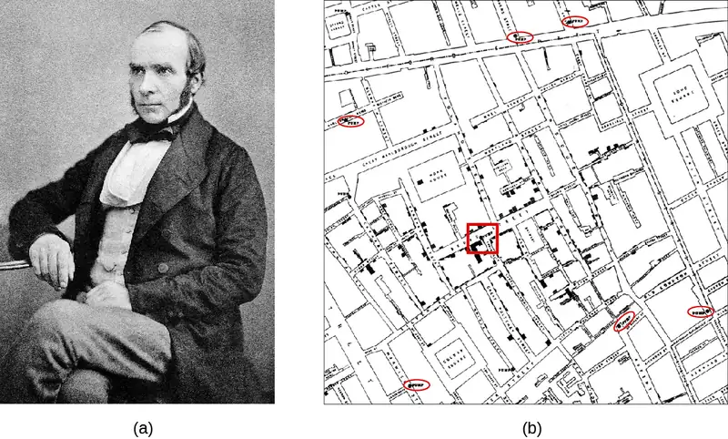
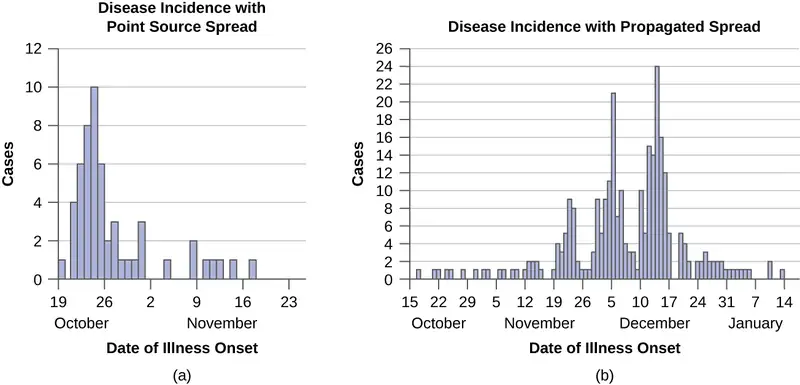
Florence Nightingale’s work is another example of an early epidemiological study. In 1854, Nightingale was part of a contingent of nurses dispatched by the British military to care for wounded soldiers during the Crimean War. Nightingale kept meticulous records regarding the causes of illness and death during the war. Her recordkeeping was a fundamental task of what would later become the science of epidemiology. Her analysis of the data she collected was published in 1858. In this book, she presented monthly frequency data on causes of death in a wedge chart histogram (Figure 16.7). This graphical presentation of data, unusual at the time, powerfully illustrated that the vast majority of casualties during the war occurred not due to wounds sustained in action but to what Nightingale deemed preventable infectious diseases. Often these diseases occurred because of poor sanitation and lack of access to hospital facilities. Nightingale’s findings led to many reforms in the British military’s system of medical care.
Joseph Lister provided early epidemiological evidence leading to good public health practices in clinics and hospitals. These settings were notorious in the mid-1800s for fatal infections of surgical wounds at a time when the germ theory of disease was not yet widely accepted (see Foundations of Modern Cell Theory). Most physicians did not wash their hands between patient visits or clean and sterilize their surgical tools. Lister, however, discovered the disinfecting properties of carbolic acid, also known as phenol (see Using Chemicals to Control Microorganisms). He introduced several disinfection protocols that dramatically lowered post-surgical infection rates.7 He demanded that surgeons who worked for him use a 5% carbolic acid solution to clean their surgical tools between patients, and even went so far as to spray the solution onto bandages and over the surgical site during operations (Figure 16.8). He also took precautions not to introduce sources of infection from his skin or clothing by removing his coat, rolling up his sleeves, and washing his hands in a dilute solution of carbolic acid before and during the surgery.
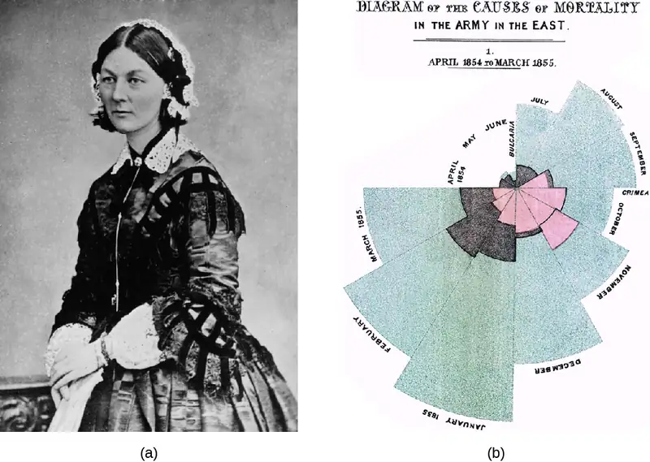
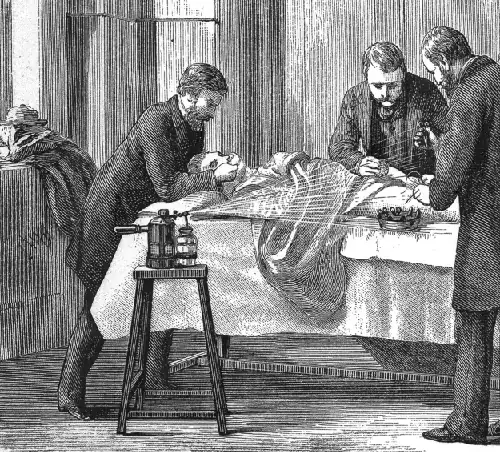
Link to Learning
John Snow’s own account of his work has additional links and information.
This CDC resource further breaks down the pattern expected from a point-source outbreak.
Learn more about Nightingale’s wedge chart here.
Check Your Understanding
- Explain the difference between common source spread and propagated spread of disease.
- Describe how the observations of John Snow, Florence Nightingale, and Joseph Lister led to improvements in public health.
Types of Epidemiological Studies¶
Today, epidemiologists make use of study designs, the manner in which data are gathered to test a hypothesis, similar to those of researchers studying other phenomena that occur in populations. These approaches can be divided into observational studies (in which subjects are not manipulated) and experimental studies (in which subjects are manipulated). Collectively, these studies give modern-day epidemiologists multiple tools for exploring the connections between infectious diseases and the populations of susceptible individuals they might infect.
Observational Studies¶
In an observational study, data are gathered from study participants through measurements (such as physiological variables like white blood cell count), or answers to questions in interviews (such as recent travel or exercise frequency). The subjects in an observational study are typically chosen at random from a population of affected or unaffected individuals. However, the subjects in an observational study are in no way manipulated by the researcher. Observational studies are typically easier to carry out than experimental studies, and in certain situations they may be the only studies possible for ethical reasons.
Observational studies are only able to measure associations between disease occurrence and possible causative agents; they do not necessarily prove a causal relationship. For example, suppose a study finds an association between heavy coffee drinking and lower incidence of skin cancer. This might suggest that coffee prevents skin cancer, but there may be another unmeasured factor involved, such as the amount of sun exposure the participants receive. If it turns out that coffee drinkers work more in offices and spend less time outside in the sun than those who drink less coffee, then it may be possible that the lower rate of skin cancer is due to less sun exposure, not to coffee consumption. The observational study cannot distinguish between these two potential causes.
There are several useful approaches in observational studies. These include methods classified as descriptive epidemiology and analytical epidemiology. Descriptive epidemiology gathers information about a disease outbreak, the affected individuals, and how the disease has spread over time in an exploratory stage of study. This type of study will involve interviews with patients, their contacts, and their family members; examination of samples and medical records; and even histories of food and beverages consumed. Such a study might be conducted while the outbreak is still occurring. Descriptive studies might form the basis for developing a hypothesis of causation that could be tested by more rigorous observational and experimental studies.
Analytical epidemiology employs carefully selected groups of individuals in an attempt to more convincingly evaluate hypotheses about potential causes for a disease outbreak. The selection of cases is generally made at random, so the results are not biased because of some common characteristic of the study participants. Analytical studies may gather their data by going back in time (retrospective studies), or as events unfold forward in time (prospective studies).
Retrospective studies gather data from the past on present-day cases. Data can include things like the medical history, age, gender, or occupational history of the affected individuals. This type of study examines associations between factors chosen or available to the researcher and disease occurrence.
Prospective studies follow individuals and monitor their disease state during the course of the study. Data on the characteristics of the study subjects and their environments are gathered at the beginning and during the study so that subjects who become ill may be compared with those who do not. Again, the researchers can look for associations between the disease state and variables that were measured during the study to shed light on possible causes.
Analytical studies incorporate groups into their designs to assist in teasing out associations with disease. Approaches to group-based analytical studies include cohort studies, case-control studies, and cross-sectional studies. The cohort method examines groups of individuals (called cohorts) who share a particular characteristic. For example, a cohort might consist of individuals born in the same year and the same place; or it might consist of people who practice or avoid a particular behavior, e.g., smokers or nonsmokers. In a cohort study, cohorts can be followed prospectively or studied retrospectively. If only a single cohort is followed, then the affected individuals are compared with the unaffected individuals in the same group. Disease outcomes are recorded and analyzed to try to identify correlations between characteristics of individuals in the cohort and disease incidence. Cohort studies are a useful way to determine the causes of a condition without violating the ethical prohibition of exposing subjects to a risk factor. Cohorts are typically identified and defined based on suspected risk factors to which individuals have already been exposed through their own choices or circumstances.
Case-control studies are typically retrospective and compare a group of individuals with a disease to a similar group of individuals without the disease. Case-control studies are far more efficient than cohort studies because researchers can deliberately select subjects who are already affected with the disease as opposed to waiting to see which subjects from a random sample will develop a disease.
A cross-sectional study analyzes randomly selected individuals in a population and compares individuals affected by a disease or condition to those unaffected at a single point in time. Subjects are compared to look for associations between certain measurable variables and the disease or condition. Cross-sectional studies are also used to determine the prevalence of a condition.
Experimental Studies¶
Experimental epidemiology uses laboratory or clinical studies in which the investigator manipulates the study subjects to study the connections between diseases and potential causative agents or to assess treatments. Examples of treatments might be the administration of a drug, the inclusion or exclusion of different dietary items, physical exercise, or a particular surgical procedure. Animals or humans are used as test subjects. Because experimental studies involve manipulation of subjects, they are typically more difficult and sometimes impossible for ethical reasons.
Koch’s postulates require experimental interventions to determine the causative agent for a disease. Unlike observational studies, experimental studies can provide strong evidence supporting cause because other factors are typically held constant when the researcher manipulates the subject. The outcomes for one group receiving the treatment are compared to outcomes for a group that does not receive the treatment but is treated the same in every other way. For example, one group might receive a regimen of a drug administered as a pill, while the untreated group receives a placebo (a pill that looks the same but has no active ingredient). Both groups are treated as similarly as possible except for the administration of the drug. Because other variables are held constant in both the treated and the untreated groups, the researcher is more certain that any change in the treated group is a result of the specific manipulation.
Experimental studies provide the strongest evidence for the etiology of disease, but they must also be designed carefully to eliminate subtle effects of bias. Typically, experimental studies with humans are conducted as double-blind studies, meaning neither the subjects nor the researchers know who is a treatment case and who is not. This design removes a well-known cause of bias in research called the placebo effect, in which knowledge of the treatment by either the subject or the researcher can influence the outcomes.
Check Your Understanding
- Describe the advantages and disadvantages of observational studies and experimental studies.
- Explain the ways that groups of subjects can be selected for analytical studies.
Clinical Focus: Part 3
Since laboratory tests had confirmed Salmonella, a common foodborne pathogen, as the etiologic agent, epidemiologists suspected that the outbreak was caused by contamination at a food processing facility serving the region. Interviews with patients focused on food consumption during and after the Thanksgiving holiday, corresponding with the timing of the outbreak. During the interviews, patients were asked to list items consumed at holiday gatherings and describe how widely each item was consumed among family members and relatives. They were also asked about the sources of food items (e.g., brand, location of purchase, date of purchase). By asking such questions, health officials hoped to identify patterns that would lead back to the source of the outbreak.
Analysis of the interview responses eventually linked almost all of the cases to consumption of a holiday dish known as the turducken—a chicken stuffed inside a duck stuffed inside a turkey. Turducken is a dish not generally consumed year-round, which would explain the spike in cases just after the Thanksgiving holiday. Additional analysis revealed that the turduckens consumed by the affected patients were purchased already stuffed and ready to be cooked. Moreover, the pre-stuffed turduckens were all sold at the same regional grocery chain under two different brand names. Upon further investigation, officials traced both brands to a single processing plant that supplied stores throughout the Florida panhandle.
- Is this an example of common source spread or propagated spread?
- What next steps would the public health office likely take after identifying the source of the outbreak?
Jump to the next Clinical Focus box. Go back to the previous Clinical Focus box.
16.3 Modes of Disease Transmission¶
Learning Objectives
By the end of this section, you will be able to:
- Describe the different types of disease reservoirs
- Compare contact, vector, and vehicle modes of transmission
- Identify important disease vectors
- Explain the prevalence of nosocomial infections
Understanding how infectious pathogens spread is critical to preventing infectious disease. Many pathogens require a living host to survive, while others may be able to persist in a dormant state outside of a living host. But having infected one host, all pathogens must also have a mechanism of transfer from one host to another or they will die when their host dies. Pathogens often have elaborate adaptations to exploit host biology, behavior, and ecology to live in and move between hosts. Hosts have evolved defenses against pathogens, but because their rates of evolution are typically slower than their pathogens (because their generation times are longer), hosts are usually at an evolutionary disadvantage. This section will explore where pathogens survive—both inside and outside hosts—and some of the many ways they move from one host to another.
Reservoirs and Carriers¶
For pathogens to persist over long periods of time they require reservoirs where they normally reside. Reservoirs can be living organisms or nonliving sites. Nonliving reservoirs can include soil and water in the environment. These may naturally harbor the organism because it may grow in that environment. These environments may also become contaminated with pathogens in human feces, pathogens shed by intermediate hosts, or pathogens contained in the remains of intermediate hosts.
Pathogens may have mechanisms of dormancy or resilience that allow them to survive (but typically not to reproduce) for varying periods of time in nonliving environments. For example, Clostridium tetani survives in the soil and in the presence of oxygen as a resistant endospore. Although many viruses are soon destroyed once in contact with air, water, or other non-physiological conditions, certain types are capable of persisting outside of a living cell for varying amounts of time. For example, a study that looked at the ability of influenza viruses to infect a cell culture after varying amounts of time on a banknote showed survival times from 48 hours to 17 days, depending on how they were deposited on the banknote.8 On the other hand, cold-causing rhinoviruses are somewhat fragile, typically surviving less than a day outside of physiological fluids.
A human acting as a reservoir of a pathogen may or may not be capable of transmitting the pathogen, depending on the stage of infection and the pathogen. To help prevent the spread of disease among school children, the CDC has developed guidelines based on the risk of transmission during the course of the disease. For example, children with chickenpox are considered contagious for five days from the start of the rash, whereas children with most gastrointestinal illnesses should be kept home for 24 hours after the symptoms disappear.
An individual capable of transmitting a pathogen without displaying symptoms is referred to as a carrier. A passive carrier is contaminated with the pathogen and can mechanically transmit it to another host; however, a passive carrier is not infected. For example, a health-care professional who fails to wash his hands after seeing a patient harboring an infectious agent could become a passive carrier, transmitting the pathogen to another patient who becomes infected.
By contrast, an active carrier is an infected individual who can transmit the disease to others. An active carrier may or may not exhibit signs or symptoms of infection. For example, active carriers may transmit the disease during the incubation period (before they show signs and symptoms) or the period of convalescence (after symptoms have subsided). Active carriers who do not present signs or symptoms of disease despite infection are called asymptomatic carriers. Pathogens such as hepatitis B virus, herpes simplex virus, and HIV are frequently transmitted by asymptomatic carriers. Mary Mallon, better known as Typhoid Mary, is a famous historical example of an asymptomatic carrier. An Irish immigrant, Mallon worked as a cook for households in and around New York City between 1900 and 1915. In each household, the residents developed typhoid fever (caused by Salmonella typhi) a few weeks after Mallon started working. Later investigations determined that Mallon was responsible for at least 122 cases of typhoid fever, five of which were fatal.9 See Eye on Ethics: Typhoid Mary for more about the Mallon case.
A pathogen may have more than one living reservoir. In zoonotic diseases, animals act as reservoirs of human disease and transmit the infectious agent to humans through direct or indirect contact. In some cases, the disease also affects the animal, but in other cases the animal is asymptomatic.
In parasitic infections, the parasite’s preferred host is called the definitive host. In parasites with complex life cycles, the definitive host is the host in which the parasite reaches sexual maturity. Some parasites may also infect one or more intermediate hosts in which the parasite goes through several immature life cycle stages or reproduces asexually.
Link to Learning
George Soper, the sanitary engineer who traced the typhoid outbreak to Mary Mallon, gives an account of his investigation, an example of descriptive epidemiology, in “The Curious Career of Typhoid Mary.”
Check Your Understanding
- List some nonliving reservoirs for pathogens.
- Explain the difference between a passive carrier and an active carrier.
Transmission¶
Regardless of the reservoir, transmission must occur for an infection to spread. First, transmission from the reservoir to the individual must occur. Then, the individual must transmit the infectious agent to other susceptible individuals, either directly or indirectly. Pathogenic microorganisms employ diverse transmission mechanisms.
Contact Transmission¶
Contact transmission includes direct contact or indirect contact. Person-to-person transmission is a form of direct contact transmission. Here the agent is transmitted by physical contact between two individuals (Figure 16.9) through actions such as touching, kissing, sexual intercourse, or droplet sprays. Direct contact can be categorized as vertical, horizontal, or droplet transmission. Vertical direct contact transmission occurs when pathogens are transmitted to a fetus or infant during pregnancy, birth, or breastfeeding. Other kinds of direct contact transmission are called horizontal direct contact transmission. Often, contact between mucous membranes is required for entry of the pathogen into the new host, although skin-to-skin contact can lead to mucous membrane contact if the new host subsequently touches a mucous membrane. Contact transmission may also be site-specific; for example, some diseases can be transmitted by sexual contact but not by other forms of contact.
When an individual coughs or sneezes, small droplets of mucus that may contain pathogens are ejected. This leads to direct droplet transmission, which refers to droplet transmission of a pathogen to a new host over distances of one meter or less. A wide variety of diseases are transmitted by droplets, including influenza and many forms of pneumonia. Transmission over distances greater than one meter is called airborne transmission.
Indirect contact transmission involves inanimate objects called fomites that become contaminated by pathogens from an infected individual or reservoir (Figure 16.10). For example, an individual with the common cold may sneeze, causing droplets to land on a fomite such as a tablecloth or carpet, or the individual may wipe her nose and then transfer mucus to a fomite such as a doorknob or towel. Transmission occurs indirectly when a new susceptible host later touches the fomite and transfers the contaminated material to a susceptible portal of entry. Fomites can also include objects used in clinical settings that are not properly sterilized, such as syringes, needles, catheters, and surgical equipment. Pathogens transmitted indirectly via such fomites are a major cause of healthcare-associated infections (see Controlling Microbial Growth).
Vehicle Transmission¶
The term vehicle transmission refers to the transmission of pathogens through vehicles such as water, food, and air. Water contamination through poor sanitation methods leads to waterborne transmission of disease. Waterborne disease remains a serious problem in many regions throughout the world. The World Health Organization (WHO) estimates that contaminated drinking water is responsible for more than 500,000 deaths each year.10 Similarly, food contaminated through poor handling or storage can lead to foodborne transmission of disease (Figure 16.11).
Dust and fine particles known as aerosols, which can float in the air, can carry pathogens and facilitate the airborne transmission of disease. For example, dust particles are the dominant mode of transmission of hantavirus to humans. Hantavirus is found in mouse feces, urine, and saliva, but when these substances dry, they can disintegrate into fine particles that can become airborne when disturbed; inhalation of these particles can lead to a serious and sometimes fatal respiratory infection.
Although droplet transmission over short distances is considered contact transmission as discussed above, longer distance transmission of droplets through the air is considered vehicle transmission. Unlike larger particles that drop quickly out of the air column, fine mucus droplets produced by coughs or sneezes can remain suspended for long periods of time, traveling considerable distances. In certain conditions, droplets desiccate quickly to produce a droplet nucleus that is capable of transmitting pathogens; air temperature and humidity can have an impact on effectiveness of airborne transmission.
Tuberculosis is often transmitted via airborne transmission when the causative agent, Mycobacterium tuberculosis, is released in small particles with coughs. Because tuberculosis requires as few as 10 microbes to initiate a new infection, patients with tuberculosis must be treated in rooms equipped with special ventilation, and anyone entering the room should wear a mask.
Clinical Focus: Resolution
After identifying the source of the contaminated turduckens, the Florida public health office notified the CDC, which requested an expedited inspection of the facility by state inspectors. Inspectors found that a machine used to process the chicken was contaminated with Salmonella as a result of substandard cleaning protocols. Inspectors also found that the process of stuffing and packaging the turduckens prior to refrigeration allowed the meat to remain at temperatures conducive to bacterial growth for too long. The contamination and the delayed refrigeration led to vehicle (food) transmission of the bacteria in turduckens.
Based on these findings, the plant was shut down for a full and thorough decontamination. All turduckens produced in the plant were recalled and pulled from store shelves ahead of the December holiday season, preventing further outbreaks.
Go back to the previous Clinical Focus Box.
Vector Transmission¶
Diseases can also be transmitted by a mechanical or biological vector, an animal (typically an arthropod) that carries the disease from one host to another. Mechanical transmission is facilitated by a mechanical vector, an animal that carries a pathogen from one host to another without being infected itself. For example, a fly may land on fecal matter and later transmit bacteria from the feces to food that it lands on; a human eating the food may then become infected by the bacteria, resulting in a case of diarrhea or dysentery (Figure 16.12).
Biological transmission occurs when the pathogen reproduces within a biological vector that transmits the pathogen from one host to another (Figure 16.12). Arthropods are the main vectors responsible for biological transmission (Figure 16.13). Most arthropod vectors transmit the pathogen by biting the host, creating a wound that serves as a portal of entry. The pathogen may go through part of its reproductive cycle in the gut or salivary glands of the arthropod to facilitate its transmission through the bite. For example, hemipterans (called “kissing bugs” or “assassin bugs”) transmit Chagas disease to humans by defecating when they bite, after which the human scratches or rubs the infected feces into a mucous membrane or break in the skin.
Biological insect vectors include mosquitoes, which transmit malaria and other diseases, and lice, which transmit typhus. Other arthropod vectors can include arachnids, primarily ticks, which transmit Lyme disease and other diseases, and mites, which transmit scrub typhus and rickettsial pox. Biological transmission, because it involves survival and reproduction within a parasitized vector, complicates the biology of the pathogen and its transmission. There are also important non-arthropod vectors of disease, including mammals and birds. Various species of mammals can transmit rabies to humans, usually by means of a bite that transmits the rabies virus. Chickens and other domestic poultry can transmit avian influenza to humans through direct or indirect contact with avian influenza virus A shed in the birds’ saliva, mucous, and feces.
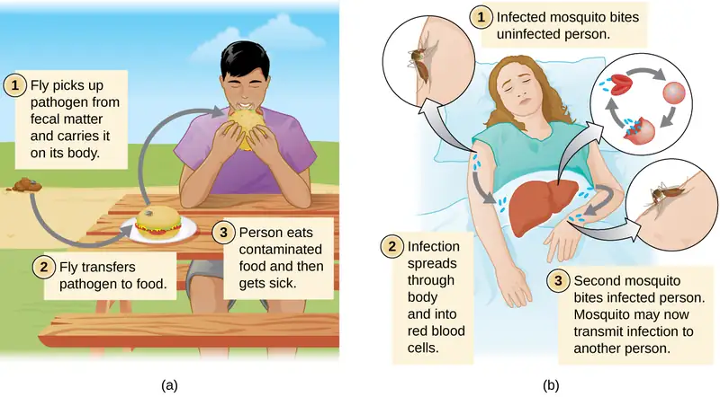
![Table titled common arthropod vectors and selected pathogens. Columns: Vector; species, pathogen; disease. Black fly; Simulium spp.; Onchocerca volvulus; Onchocerciasis (river blindness). Flea (has 2). Ctenocephalides felis; Bartonella henselae; cat scratch disease. Xenopsylla cheopis (has 2). Rickettsia typhi; murine typhus. Yersinia pestis; plague. Kissing bug, Triatoma spp.; Trypanosoma cruzi; Chagas disease. Louse; Pediculus humanus humanus (has 3) Bartonella quintana; trench fever. Borrelia recurrentis; relapsing fever. Rickettsia prowazekii; typhus. Mite/chigger (has 2). Leptotrombidium spp.; Orientia tsutsugamushi; scrub typhus. Rickettsia akari; rickettsialpox. Moquito (has 3). Aedes spp and Haemogogus spp.; yellow fever virus; yellow fever. Anopheles spp.; Plasmodium falciparum; malaria. Cutex pipiens; west nile virus, west nile disease. Sand fly; Phlebotomus spp.; Leishmania spp.; Leishmaniasis. Tick (has 2): Ixodes spp; Borrelia spp.; Lyme disease. Dermacentor spp. And others; Rickettsi rickettsia; rocky mountain spotted fever. Tsetse fly; Glossina spp. Trypanosoma brucei Trypanosomiasis (sleepting sickness).](img/osc-microbio-16-03-vectortab.webp)
Check Your Understanding
- Describe how diseases can be transmitted through the air.
- Explain the difference between a mechanical vector and a biological vector.
Eye on Ethics: Using GMOs to Stop the Spread of Zika
In 2016, an epidemic of the Zika virus was linked to a high incidence of birth defects in South America and Central America. As winter turned to spring in the northern hemisphere, health officials correctly predicted the virus would spread to North America, coinciding with the breeding season of its major vector, the Aedes aegypti mosquito.
The range of the A. aegypti mosquito extends well into the southern United States (Figure 16.14). Because these same mosquitoes serve as vectors for other problematic diseases (dengue fever, yellow fever, and others), various methods of mosquito control have been proposed as solutions. Chemical pesticides have been used effectively in the past, and are likely to be used again; but because chemical pesticides can have negative impacts on the environment, some scientists have proposed an alternative that involves genetically engineering A. aegypti so that it cannot reproduce. This method, however, has been the subject of some controversy.
One method that has worked in the past to control pests, with little apparent downside, has been sterile male introductions. This method controlled the screw-worm fly pest in the southwest United States and fruit fly pests of fruit crops. In this method, males of the target species are reared in the lab, sterilized with radiation, and released into the environment where they mate with wild females, who subsequently bear no live offspring. Repeated releases shrink the pest population.
A similar method, taking advantage of recombinant DNA technology,11 introduces a dominant lethal allele into male mosquitoes that is suppressed in the presence of tetracycline (an antibiotic) during laboratory rearing. The males are released into the environment and mate with female mosquitoes. Unlike the sterile male method, these matings produce offspring, but they die as larvae from the lethal gene in the absence of tetracycline in the environment. As of 2016, this method has yet to be implemented in the United States, but a UK company tested the method in Piracicaba, Brazil, and found an 82% reduction in wild A. aegypti larvae and a 91% reduction in dengue cases in the treated area.12 In August 2016, amid news of Zika infections in several Florida communities, the FDA gave the UK company permission to test this same mosquito control method in Key West, Florida, pending compliance with local and state regulations and a referendum in the affected communities.
The use of genetically modified organisms (GMOs) to control a disease vector has its advocates as well as its opponents. In theory, the system could be used to drive the A. aegypti mosquito extinct—a noble goal according to some, given the damage they do to human populations.13 But opponents of the idea are concerned that the gene could escape the species boundary of A. aegypti and cause problems in other species, leading to unforeseen ecological consequences. Opponents are also wary of the program because it is being administered by a for-profit corporation, creating the potential for conflicts of interest that would have to be tightly regulated; and it is not clear how any unintended consequences of the program could be reversed.
There are other epidemiological considerations as well. Aedes aegypti is apparently not the only vector for the Zika virus. Aedes albopictus, the Asian tiger mosquito, is also a vector for the Zika virus.14 A. albopictus is now widespread around the planet including much of the United States (Figure 16.14). Many other mosquitoes have been found to harbor Zika virus, though their capacity to act as vectors is unknown.15 Genetically modified strains of A. aegypti will not control the other species of vectors. Finally, the Zika virus can apparently be transmitted sexually between human hosts, during pregnancy to a fetus or during birth, and possibly through blood transfusion. All of these factors must be considered in any approach to controlling the spread of the virus.
Clearly there are risks and unknowns involved in conducting an open-environment experiment of an as-yet poorly understood technology. But allowing the Zika virus to spread unchecked is also risky. Does the threat of a Zika epidemic justify the ecological risk of genetically engineering mosquitos? Are current methods of mosquito control sufficiently ineffective or harmful that we need to try untested alternatives? These are the questions being put to public health officials now.
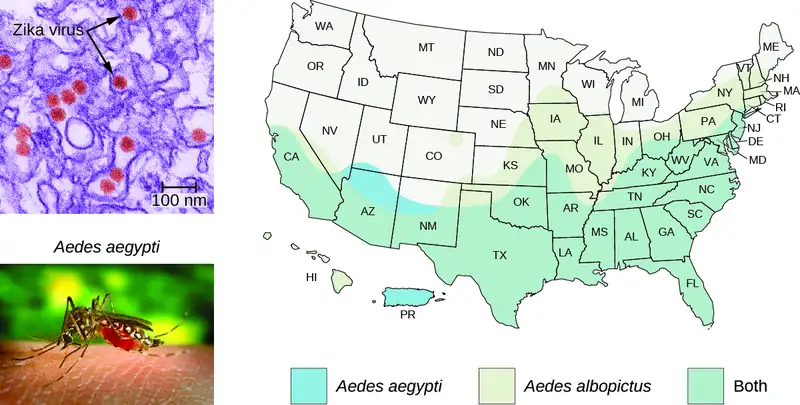
Quarantining¶
Individuals suspected or known to have been exposed to certain contagious pathogens may be quarantined, or isolated to prevent transmission of the disease to others. Hospitals and other health-care facilities generally set up special wards to isolate patients with particularly hazardous diseases such as tuberculosis or Ebola (Figure 16.15). Depending on the setting, these wards may be equipped with special air-handling methods, and personnel may implement special protocols to limit the risk of transmission, such as personal protective equipment or the use of chemical disinfectant sprays upon entry and exit of medical personnel.
The duration of the quarantine depends on factors such as the incubation period of the disease and the evidence suggestive of an infection. The patient may be released if signs and symptoms fail to materialize when expected or if preventive treatment can be administered in order to limit the risk of transmission. If the infection is confirmed, the patient may be compelled to remain in isolation until the disease is no longer considered contagious.
In the United States, public health authorities may only quarantine patients for certain diseases, such as cholera, diphtheria, infectious tuberculosis, and strains of influenza capable of causing a pandemic. Individuals entering the United States or moving between states may be quarantined by the CDC if they are suspected of having been exposed to one of these diseases. Although the CDC routinely monitors entry points to the United States for crew or passengers displaying illness, quarantine is rarely implemented.
During the COVID-19 pandemic, quarantine became a common practice, particularly related to international travel. Various countries implemented quarantine and isolation requirements based on the availability of testing and vaccinations. Initially, some nations required that all international travelers remain quarantined for a period after arrival; later on, they instituted quarantine only for those who tested positive.
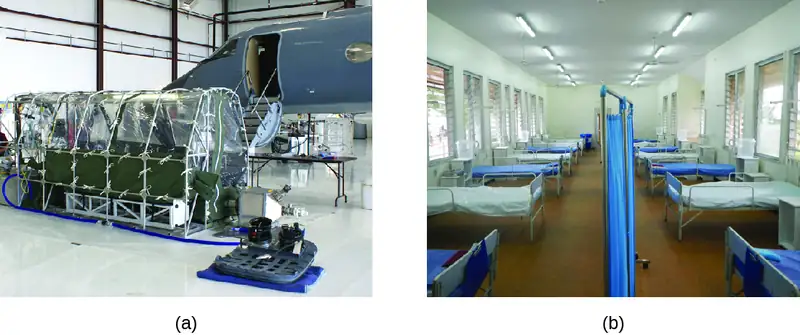
Healthcare-Associated (Nosocomial) Infections¶
Hospitals, retirement homes, and prisons attract the attention of epidemiologists because these settings are associated with increased incidence of certain diseases. Higher rates of transmission may be caused by characteristics of the environment itself, characteristics of the population, or both. Consequently, special efforts must be taken to limit the risks of infection in these settings.
Infections acquired in health-care facilities, including hospitals, are called nosocomial infections or healthcare-associated infections (HAI). HAIs are often connected with surgery or other invasive procedures that provide the pathogen with access to the portal of infection. For an infection to be classified as an HAI, the patient must have been admitted to the health-care facility for a reason other than the infection. In these settings, patients suffering from primary disease are often afflicted with compromised immunity and are more susceptible to secondary infection and opportunistic pathogens.
In 2011, more than 720,000 HAIs occurred in hospitals in the United States, according to the CDC. About 22% of these HAIs occurred at a surgical site, and cases of pneumonia accounted for another 22%; urinary tract infections accounted for an additional 13%, and primary bloodstream infections 10%.16 Such HAIs often occur when pathogens are introduced to patients’ bodies through contaminated surgical or medical equipment, such as catheters and respiratory ventilators. Health-care facilities seek to limit nosocomial infections through training and hygiene protocols such as those described in Control of Microbial Growth.
Check Your Understanding
- Give some reasons why HAIs occur.
16.4 Global Public Health¶
Learning Objectives
By the end of this section, you will be able to:
- Describe the entities involved in international public health and their activities
- Identify and differentiate between emerging and reemerging infectious diseases
A large number of international programs and agencies are involved in efforts to promote global public health. Among their goals are developing infrastructure in health care, public sanitation, and public health capacity; monitoring infectious disease occurrences around the world; coordinating communications between national public health agencies in various countries; and coordinating international responses to major health crises. In large part, these international efforts are necessary because disease-causing microorganisms know no national boundaries.
The World Health Organization (WHO)¶
International public health issues are coordinated by the World Health Organization (WHO), an agency of the United Nations. Of its roughly $4 billion budget for 2015–1617, about $1 billion was funded by member states and the remaining $3 billion by voluntary contributions. In addition to monitoring and reporting on infectious disease, WHO also develops and implements strategies for their control and prevention. WHO has had a number of successful international public health campaigns. For example, its vaccination program against smallpox, begun in the mid-1960s, resulted in the global eradication of the disease by 1980. WHO continues to be involved in infectious disease control, primarily in the developing world, with programs targeting malaria, HIV/AIDS, and tuberculosis, among others. It also runs programs to reduce illness and mortality that occur as a result of violence, accidents, lifestyle-associated illnesses such as diabetes, and poor health-care infrastructure.
WHO maintains a global alert and response system that coordinates information from member nations. In the event of a public health emergency or epidemic, it provides logistical support and coordinates international response to the emergency. The United States contributes to this effort through the CDC. The CDC carries out international monitoring and public health efforts, mainly in the service of protecting US public health in an increasingly connected world. Similarly, the European Union maintains a Health Security Committee that monitors disease outbreaks within its member countries and internationally, coordinating with WHO.
Check Your Understanding
- Name the organizations that participate in international public health monitoring.
Emerging and Reemerging Infectious Diseases¶
Both WHO and some national public health agencies such as the CDC monitor and prepare for emerging infectious diseases. An emerging infectious disease is either new to the human population or has shown an increase in prevalence in the previous twenty years. Whether the disease is new or conditions have changed to cause an increase in frequency, its status as emerging implies the need to apply resources to understand and control its growing impact.
Emerging diseases may change their frequency gradually over time, or they may experience sudden epidemic growth. The importance of vigilance was made clear during the Ebola hemorrhagic fever epidemic in western Africa through 2014–2015. Although health experts had been aware of the Ebola virus since the 1970s, an outbreak on such a large scale had never happened before (Figure 16.16). Previous human epidemics had been small, isolated, and contained. Indeed, the gorilla and chimpanzee populations of western Africa had suffered far worse from Ebola than the human population. The pattern of small isolated human epidemics changed in 2014. Its high transmission rate, coupled with cultural practices for treatment of the dead and perhaps its emergence in an urban setting, caused the disease to spread rapidly, and thousands of people died. The international public health community responded with a large emergency effort to treat patients and contain the epidemic.
Emerging diseases are found in all countries, both developed and developing (Table 16.2). Some nations are better equipped to deal with them. National and international public health agencies watch for epidemics like the Ebola outbreak in developing countries because those countries rarely have the health-care infrastructure and expertise to deal with large outbreaks effectively. Even with the support of international agencies, the systems in western Africa struggled to identify and care for the sick and control spread. In addition to the altruistic goal of saving lives and assisting nations lacking in resources, the global nature of transportation means that an outbreak anywhere can spread quickly to every corner of the planet. Managing an epidemic in one location—its source—is far easier than fighting it on many fronts.
Ebola is not the only disease that needs to be monitored in the global environment. In 2015, WHO set priorities on several emerging diseases that had a high probability of causing epidemics and that were poorly understood (and thus urgently required research and development efforts).
A reemerging infectious disease is a disease that is increasing in frequency after a previous period of decline. Its reemergence may be a result of changing conditions or old prevention regimes that are no longer working. Examples of such diseases are drug-resistant forms of tuberculosis, bacterial pneumonia, and malaria. Drug-resistant strains of the bacteria causing gonorrhea and syphilis are also becoming more widespread, raising concerns of untreatable infections.
![Graph of Known human cases of Ebola virus diseases worldwide from 1976 – 2015. There were 604 in 1976-77. There were 44 in 1978-79. There were 0 from 1980 – 87. There were 3 in 1988-89. There were 4 in 1990-91. There were 368 in 1994-95. There were 100 in 1996-97. There were 0 in 1998-99. There were 547 in 2000-2001. There were 178 in 2002-2003. There were 18 in 2004-2005. There were 413 in 2006-2007. There were 38 in 2006-2007. There were 38 in 2008-2009. There was 1 in 2010-2011. There were 53 in 2012-2013. There were 28,718 in 2014-2015.](img/osc-microbio-16-04-sfts.webp)
Table 16.2
| Some Emerging and Reemerging Infectious Diseases | ||||
|---|---|---|---|---|
| Disease | Pathogen | Year Discovered | Affected Regions | Transmission |
| AIDS | HIV | 1981 | Worldwide | Contact with infected body fluids |
| Chikungunya fever | Chikungunya virus | 1952 | Africa, Asia, India; spreading to Europe and the Americas | Mosquito-borne |
| Ebola virus disease | Ebola virus | 1976 | Central and Western Africa | Contact with infected body fluids |
| H1N1 Influenza (swine flu) | H1N1 virus | 2009 | Worldwide | Droplet transmission |
| Lyme disease | Borrelia burgdorferi bacterium | 1981 | Northern hemisphere | From mammal reservoirs to humans by tick vectors |
| West Nile virus disease | West Nile virus | 1937 | Africa, Australia, Canada to Venezuela, Europe, Middle East, Western Asia | Mosquito-borne |
Check Your Understanding
- Explain why it is important to monitor emerging infectious diseases.
- Explain how a bacterial disease could reemerge, even if it had previously been successfully treated and controlled.
Micro Connections: SARS Outbreak and Identification
On November 16, 2002, the first case of a SARS outbreak was reported in Guangdong Province, China. The patient exhibited influenza-like symptoms such as fever, cough, myalgia, sore throat, and shortness of breath. As the number of cases grew, the Chinese government was reluctant to openly communicate information about the epidemic with the World Health Organization (WHO) and the international community. The slow reaction of Chinese public health officials to this new disease contributed to the spread of the epidemic within and later outside China. In April 2003, the Chinese government finally responded with a huge public health effort involving quarantines, medical checkpoints, and massive cleaning projects. Over 18,000 people were quarantined in Beijing alone. Large funding initiatives were created to improve health-care facilities, and dedicated outbreak teams were created to coordinate the response. By August 16, 2003, the last SARS patients were released from a hospital in Beijing nine months after the first case was reported in China.
In the meantime, SARS spread to other countries on its way to becoming a global pandemic. Though the infectious agent had yet to be identified, it was thought to be an influenza virus. The disease was named SARS, an acronym for severe acute respiratory syndrome, until the etiologic agent could be identified. Travel restrictions to Southeast Asia were enforced by many countries. By the end of the outbreak, there were 8,098 cases and 774 deaths worldwide. China and Hong Kong were hit hardest by the epidemic, but Taiwan, Singapore, and Toronto, Canada, also saw significant numbers of cases.
Fortunately, timely public health responses in many countries effectively suppressed the outbreak and led to its eventual containment. For example, the disease was introduced to Canada in February 2003 by an infected traveler from Hong Kong, who died shortly after being hospitalized. By the end of March, hospital isolation and home quarantine procedures were in place in the Toronto area, stringent anti-infection protocols were introduced in hospitals, and the media were actively reporting on the disease. Public health officials tracked down contacts of infected individuals and quarantined them. A total of 25,000 individuals were quarantined in the city. Thanks to the vigorous response of the Canadian public health community, SARS was brought under control in Toronto by June, a mere four months after it was introduced.
In 2003, WHO established a collaborative effort to identify the causative agent of SARS, which has now been identified as a coronavirus that was associated with horseshoe bats. The genome of the SARS virus was sequenced and published by researchers at the CDC and in Canada in May 2003, and in the same month researchers in the Netherlands confirmed the etiology of the disease by fulfilling Koch’s postulates for the SARS coronavirus. The last known case of SARS worldwide was reported in 2004.
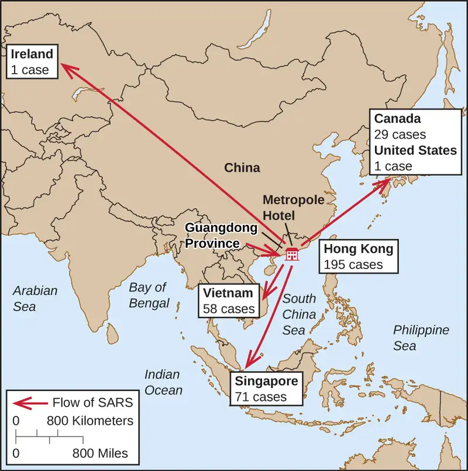
Link to Learning
This database of reports chronicles outbreaks of infectious disease around the world. It was on this system that the first information about the SARS outbreak in China emerged.
The CDC publishes Emerging Infectious Diseases, a monthly journal available online.
Chapter Review¶
Key Concepts and Summary¶
16.1 The Language of Epidemiologists¶
- Epidemiology is the science underlying public health.
- Morbidity means being in a state of illness, whereas mortality refers to death; both morbidity rates and mortality rates are of interest to epidemiologists.
- Incidence is the number of new cases (morbidity or mortality), usually expressed as a proportion, during a specified time period; prevalence is the total number affected in the population, again usually expressed as a proportion.
- Sporadic diseases only occur rarely and largely without a geographic focus. Endemic diseases occur at a constant (and often low) level within a population. Epidemic diseases and pandemic diseases occur when an outbreak occurs on a significantly larger than expected level, either locally or globally, respectively.
- Koch’s postulates specify the procedure for confirming a particular pathogen as the etiologic agent of a particular disease. Koch’s postulates have limitations in application if the microbe cannot be isolated and cultured or if there is no animal host for the microbe. In this case, molecular Koch’s postulates would be utilized.
- In the United States, the Centers for Disease Control and Prevention monitors notifiable diseases and publishes weekly updates in the Morbidity and Mortality Weekly Report.
16.2 Tracking Infectious Diseases¶
- Early pioneers of epidemiology such as John Snow, Florence Nightingale, and Joseph Lister, studied disease at the population level and used data to disrupt disease transmission.
- Descriptive epidemiology studies rely on case analysis and patient histories to gain information about outbreaks, frequently while they are still occurring.
- Retrospective epidemiology studies use historical data to identify associations with the disease state of present cases. Prospective epidemiology studies gather data and follow cases to find associations with future disease states.
- Analytical epidemiology studies are observational studies that are carefully designed to compare groups and uncover associations between environmental or genetic factors and disease.
- Experimental epidemiology studies generate strong evidence of causation in disease or treatment by manipulating subjects and comparing them with control subjects.
16.3 Modes of Disease Transmission¶
- Reservoirs of human disease can include the human and animal populations, soil, water, and inanimate objects or materials.
- Contact transmission can be direct or indirect through physical contact with either an infected host (direct) or contact with a fomite that an infected host has made contact with previously (indirect).
- Vector transmission occurs when a living organism carries an infectious agent on its body (mechanical) or as an infection host itself (biological), to a new host.
- Vehicle transmission occurs when a substance, such as soil, water, or air, carries an infectious agent to a new host.
- Healthcare-associated infections (HAI), or nosocomial infections, are acquired in a clinical setting. Transmission is facilitated by medical interventions and the high concentration of susceptible, immunocompromised individuals in clinical settings.
16.4 Global Public Health¶
- The World Health Organization (WHO) is an agency of the United Nations that collects and analyzes data on disease occurrence from member nations. WHO also coordinates public health programs and responses to international health emergencies.
- Emerging diseases are those that are new to human populations or that have been increasing in the past two decades. Reemerging diseases are those that are making a resurgence in susceptible populations after previously having been controlled in some geographic areas.
Matching¶
16.1 The Language of Epidemiologists¶
1. Match each term with its description.
| ___sporadic disease | A. the number of disease cases per 100,000 individuals |
| ___endemic disease | B. a disease in higher than expected numbers around the world |
| ___pandemic disease | C. the number of deaths from a disease for every 10,000 individuals |
| ___morbidity rate | D. a disease found occasionally in a region with cases occurring mainly in isolation from each other |
| ___mortality rate | E. a disease found regularly in a region |
Answer
D, E, B, A, C
16.2 Tracking Infectious Diseases¶
2. Match each type of epidemiology study with its description.
| ___experimental | A. examination of past case histories and medical test results conducted on patients in an outbreak |
| ___analytical | B. examination of current case histories, interviews with patients and their contacts, interpretation of medical test results; frequently conducted while outbreak is still in progress |
| ___prospective | C. use of a set of test subjects (human or animal) and control subjects that are treated the same as the test subjects except for the specific treatment being studied |
| ___descriptive | D. observing groups of individuals to look for associations with disease |
| ___retrospective | E. a comparison of a cohort of individuals through the course of the study |
Answer
C, D, E, B, A
3. Match each pioneer of epidemiology with their contribution.
| ___Florence Nightingale | A. determined the source of a cholera outbreak in London |
| ___Robert Koch | B. showed that surgical wound infection rates could be dramatically reduced by using carbolic acid to disinfect surgical tools, bandages, and surgical sites |
| ___Joseph Lister | C. compiled data on causes of mortality in soldiers, leading to innovations in military medical care |
| ___John Snow | D. developed a methodology for conclusively determining the etiology of disease |
Answer
C, D, B, A
Fill in the Blank¶
16.1 The Language of Epidemiologists¶
4. The ________ collects data and conducts epidemiologic studies in the United States.
Answer
Centers for Disease Control and Prevention, or CDC
16.2 Tracking Infectious Diseases¶
5. ________occurs when an infected individual passes the infection on to other individuals, who pass it on to still others, increasing the penetration of the infection into the susceptible population.
Answer
Propagated spread
6. A batch of food contaminated with botulism exotoxin, consumed at a family reunion by most of the members of a family, would be an example of a ________ outbreak.
Answer
point source
16.3 Modes of Disease Transmission¶
7. A patient in the hospital with a urinary catheter develops a bladder infection. This is an example of a(n) ________ infection.
Answer
nosocomial or healthcare-associated
8. A ________ is an animal that can transfer infectious pathogens from one host to another.
Answer
vector
16.4 Global Public Health¶
9. The ________ collects data and conducts epidemiologic studies at the global level.
Answer
WHO (World Health Organization)
Short Answer¶
16.1 The Language of Epidemiologists¶
10. During an epidemic, why might the prevalence of a disease at a particular time not be equal to the sum of the incidences of the disease?
11. In what publication would you find data on emerging/reemerging diseases in the United States?
16.2 Tracking Infectious Diseases¶
12. What activity did John Snow conduct, other than mapping, that contemporary epidemiologists also use when trying to understand how to control a disease?
16.3 Modes of Disease Transmission¶
13. Differentiate between droplet vehicle transmission and airborne transmission.
Critical Thinking¶
16.1 The Language of Epidemiologists¶
14. Why might an epidemiological population in a state not be the same size as the number of people in a state? Use an example.
16.3 Modes of Disease Transmission¶
15. Many people find that they become ill with a cold after traveling by airplane. The air circulation systems of commercial aircraft use HEPA filters that should remove any infectious agents that pass through them. What are the possible reasons for increased incidence of colds after flights?
16.4 Global Public Health¶
16. An Atlantic crossing by boat from England to New England took 60–80 days in the 18th century. In the late 19th century the voyage took less than a week. How do you think these time differences for travel might have impacted the spread of infectious diseases from Europe to the Americas, or vice versa?
Multiple Choice¶
16.3 Modes of Disease Transmission¶
17. Which is the most common type of biological vector of human disease?
- viruses
- bacteria
- mammals
- arthropods
Answer
D
18. A mosquito bites a person who subsequently develops a fever and abdominal rash. What type of transmission would this be?
- mechanical vector transmission
- biological vector transmission
- direct contact transmission
- vehicle transmission
Answer
B
19. Cattle are allowed to pasture in a field that contains the farmhouse well, and the farmer’s family becomes ill with a gastrointestinal pathogen after drinking the water. What type of transmission of infectious agents would this be?
- biological vector transmission
- direct contact transmission
- indirect contact transmission
- vehicle transmission
Answer
D
20. A blanket from a child with chickenpox is likely to be contaminated with the virus that causes chickenpox (Varicella-zoster virus). What is the blanket called?
- fomite
- host
- pathogen
- vector
Answer
A
16.4 Global Public Health¶
21. Which of the following would NOT be considered an emerging disease?
- Ebola hemorrhagic fever
- West Nile virus fever/encephalitis
- Zika virus disease
- Tuberculosis
Answer
D
22. Which of the following would NOT be considered a reemerging disease?
- Drug-resistant tuberculosis
- Drug-resistant gonorrhea
- Malaria
- West Nile virus fever/encephalitis
Answer
D
23. Which of the following factors can lead to reemergence of a disease?
- A mutation that allows it to infect humans
- A period of decline in vaccination rates
- A change in disease reporting procedures
- Better education on the signs and symptoms of the disease
Answer
B
24. Why are emerging diseases with very few cases the focus of intense scrutiny?
- They tend to be more deadly
- They are increasing and therefore not controlled
- They naturally have higher transmission rates
- They occur more in developed countries
Answer
B
Adapted from Microbiology by OpenStax, licensed under CC BY 4.0. Access the original for free at openstax.org. Changes: converted to the web reading format of The Open Book Project.
-
H. Irene Hall, Qian An, Tian Tang, Ruiguang Song, Mi Chen, Timothy Green, and Jian Kang. “Prevalence of Diagnosed and Undiagnosed HIV Infection—United States, 2008–2012.” Morbidity and Mortality Weekly Report 64, no. 24 (2015): 657–662. ↩
-
Centers for Disease Control and Prevention. “Diagnoses of HIV Infection in the United States and Dependent Areas, 2014.” HIV Surveillance Report 26 (2015). ↩
-
Centers for Disease Control and Prevention. “Tetanus Surveillance—United States, 2001–2008.” Morbidity and Mortality Weekly Report 60, no. 12 (2011): 365. ↩
-
Centers for Disease Control and Prevention. “Plague in the United States.” 2015. http://www.cdc.gov/plague/maps. Accessed June 1, 2016. ↩
-
John Snow. On the Mode of Communication of Cholera. Second edition, Much Enlarged. John Churchill, 1855. ↩
-
John Snow. “The Cholera near Golden-Square, and at Deptford.” Medical Times and Gazette 9 (1854): 321–322. http://www.ph.ucla.edu/epi/snow/choleragoldensquare.html. ↩
-
O.M. Lidwell. “Joseph Lister and Infection from the Air.” Epidemiology and Infection 99 (1987): 569–578. http://www.ncbi.nlm.nih.gov/pmc/articles/PMC2249236/pdf/epidinfect00006-0004.pdf. ↩
-
Yves Thomas, Guido Vogel, Werner Wunderli, Patricia Suter, Mark Witschi, Daniel Koch, Caroline Tapparel, and Laurent Kaiser. “Survival of Influenza Virus on Banknotes.” Applied and Environmental Microbiology 74, no. 10 (2008): 3002–3007. ↩
-
Filio Marineli, Gregory Tsoucalas, Marianna Karamanou, and George Androutsos. “Mary Mallon (1869–1938) and the History of Typhoid Fever.” Annals of Gastroenterology 26 (2013): 132–134. http://www.ncbi.nlm.nih.gov/pmc/articles/PMC3959940/pdf/AnnGastroenterol-26-132.pdf. ↩
-
World Health Organization. Fact sheet No. 391—Drinking Water. June 2005. http://www.who.int/mediacentre/factsheets/fs391/en. ↩
-
Blandine Massonnet-Bruneel, Nicole Corre-Catelin, Renaud Lacroix, Rosemary S. Lees, Kim Phuc Hoang, Derric Nimmo, Luke Alphey, and Paul Reiter. “Fitness of Transgenic Mosquito Aedes aegypti Males Carrying a Dominant Lethal Genetic System.” PLOS ONE 8, no. 5 (2013): e62711. ↩
-
Richard Levine. “Cases of Dengue Drop 91 Percent Due to Genetically Modified Mosquitoes.” Entomology Today. https://entomologytoday.org/2016/07/14/cases-of-dengue-drop-91-due-to-genetically-modified-mosquitoes. ↩
-
Olivia Judson. “A Bug’s Death.” The New York Times, September 25, 2003. http://www.nytimes.com/2003/09/25/opinion/a-bug-s-death.html. ↩
-
Gilda Grard, Mélanie Caron, Illich Manfred Mombo, Dieudonné Nkoghe, Statiana Mboui Ondo, Davy Jiolle, Didier Fontenille, Christophe Paupy, and Eric Maurice Leroy. “Zika Virus in Gabon (Central Africa)–2007: A New Threat from Aedes albopictus?” PLOS Neglected Tropical Diseases 8, no. 2 (2014): e2681. ↩
-
Constância F.J. Ayres. “Identification of Zika Virus Vectors and Implications for Control.” The Lancet Infectious Diseases 16, no. 3 (2016): 278–279. ↩
-
Centers for Disease Control and Prevention. “HAI Data and Statistics.” 2016. http://www.cdc.gov/hai/surveillance. Accessed Jan 2, 2016. ↩
-
World Health Organization. “Programme Budget 2014–2015.” http://www.who.int/about/finances-accountability/budget/en. ↩